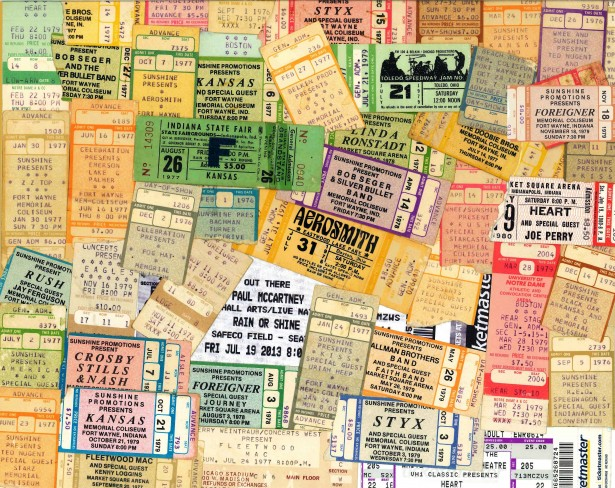

A Stubber Service
(Ember Style)
Why?
Check out this file
// vidz/app/assets/javascripts/lib/segment.io.stubs.js
window.analytics = window.analytics || [];
window.analytics.methods = ['identify', 'group', 'track',
'page', 'pageview', 'alias', 'ready', 'on', 'once', 'off',
'trackLink', 'trackForm', 'trackClick', 'trackSubmit'];
window.analytics.factory = function(method){
return function(){
var args = Array.prototype.slice.call(arguments);
args.unshift(method);
window.analytics.push(args);
return window.analytics;
};
};
for (var i = 0; i < window.analytics.methods.length; i++) {
var key = window.analytics.methods[i];
window.analytics[key] = window.analytics.factory(key);
}
Where do we go from here
- REFACTOR TO JS!!!
- Write more tests
- Speed up test runner (guard?)
- Suggestions? Questions?
The End